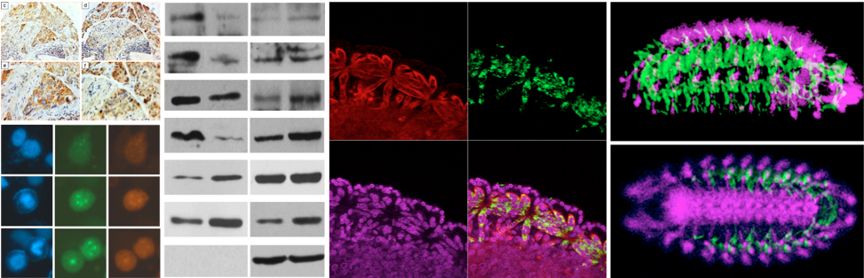

Publications
2009
- L. Qin, T. Tong, Y. Song, L. Xue, F. Fan, Q. Zhan. Aurora-A interacts with Cyclin B1 and enhances its stability. Cancer Lett. 2009 Mar 8;275(1):77-85. Epub 2008 Nov 22.
2008
- L. Qin, F. Fan, Q. Zhan. The role of Cyclin B1 in cell cycle regulation and in development and progression of tumor. Journal of Medical Research, 2008, 37(1), 8-10.
2006
- D. Wang, J. Chen, L. Qin, B. Zhao, C. Zhang. Establishment of Colloid Gold Immunity Chromatography Assay for Cardiac Troponin-I (cTn-I). Chinese Journal of radiological Health, 2006, 15(2), 156-157
- D. Wang, J. Chen, L. Qin, C. Zhang. Development of enzyme-linked-immunosorbent assay for cardiac troponin-I (cTn-I). Biomedical Engineering and Clinical Medicine, 2006,10(3), 185-187
- D. Wang, C. Zhang, F. Yang, J. Chen, L. Qin, Y. Jin, P. Han. The Preparation of Enzyme-linked Immunosorbent Assay (ELISA) Kit for Serum Testosterone. China Preventive Medicine, 2006, (2)
2005
- L. Qin, C. Zhang. The research progress and medicine application of the scFv antibody. Foreign Medical Sciences Section of Radiation Medicine and Nuclear Medicine. 2005, 29(6), 255-257.